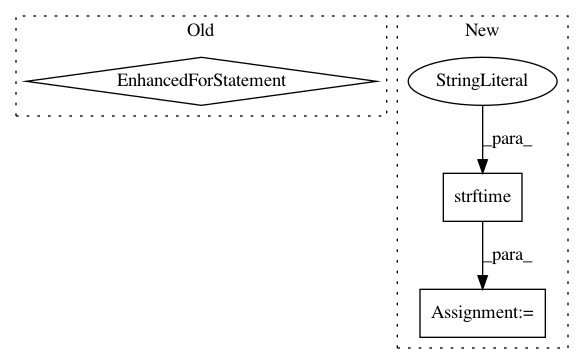

667749af7f4fdfca641ce16e0c324e9cd912c87c,logsProcess.py,LogsProcess,process_global_data,#LogsProcess#,104
Before Change
self.outputqueue.put("2|logs|Profile: " + profileid + ". " + twLen + " timewindows")
twid = __database__.getLastTWforProfile(profileid)
twdata = __database__.getTWProfileDstIPs(profileid, twid)
for ip in twdata:
self.outputqueue.put("2|logs|\tDstIP: " + ip.decode("utf-8"))
except KeyboardInterrupt:
return True
except Exception as inst:
print("\tProblem with process_gloabl_data in LogsProcess()")
After Change
TWforProfile = __database__.getTWsfromProfile(profileid)
for (twid, twtime) in TWforProfile:
twid = twid.decode("utf-8")
twtime = time.strftime("%Y-%m-%dT%H:%M:%S", time.localtime(twtime))
twlog = twid + "." + twtime
// Add data into profile log
twdata = __database__.getDstIPsfromProfileTW(profileid, twid)
for ip in twdata:
self.addDataToTWLogofProfile(profileid, twlog, "DstIP: "+ ip.decode("utf-8"))
In pattern: SUPERPATTERN
Frequency: 3
Non-data size: 3
Instances
Project Name: stratosphereips/StratosphereLinuxIPS
Commit Name: 667749af7f4fdfca641ce16e0c324e9cd912c87c
Time: 2018-12-18
Author: eldraco@gmail.com
File Name: logsProcess.py
Class Name: LogsProcess
Method Name: process_global_data
Project Name: catalyst-cooperative/pudl
Commit Name: 4296d854f38a7544eb02cd72d9cdb11e215051ce
Time: 2018-07-05
Author: karldw@users.noreply.github.com
File Name: pudl/init.py
Class Name:
Method Name: _ETL_cems
Project Name: quiltdata/quilt
Commit Name: 9087a7f9301e17510bc903b9beb532bc7ae641fd
Time: 2020-07-16
Author: dima@quiltdata.io
File Name: lambdas/access_counts/index.py
Class Name:
Method Name: handler